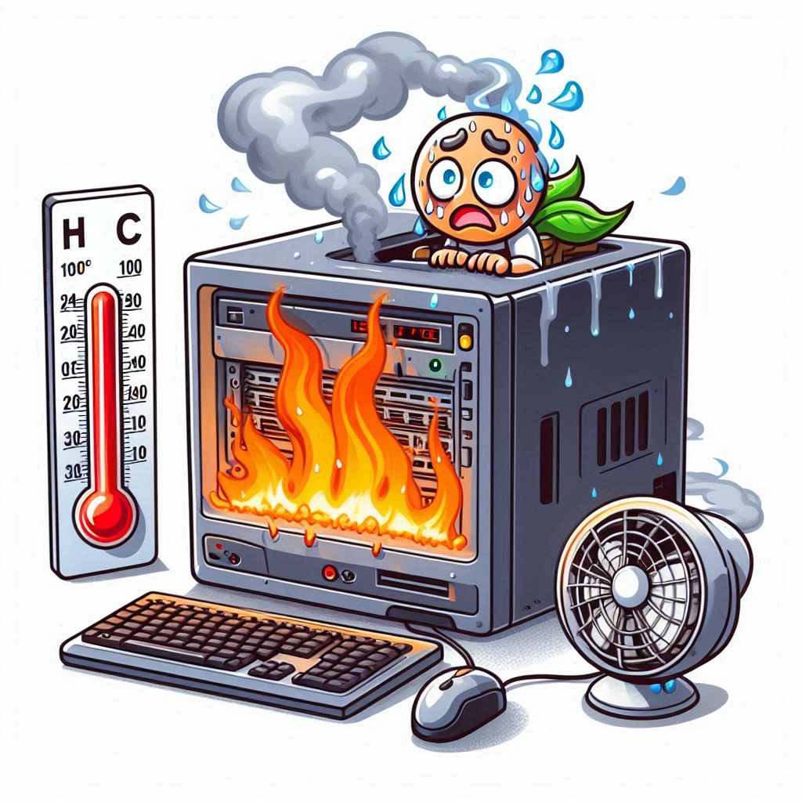

Temperaturas Altas
Cuando el ordenador se sobrecaliente, actúe rápidamente para evitar pérdidas de datos o daños permanentes en el hardware.
Unos ventiladores sobrecargados agotarán la batería del portátil en poco tiempo. Y mantener una temperatura estable en el núcleo es vital para el rendimiento a largo plazo de la batería y otros componentes internos.
Algunas prevenciones son...
Limpieza Regular
Mejora la Circulación de Aire
Actualización del Sistema de Refrigeración
Gestión del Software
Optimización del Hardware
Mantén la Carcasa Cerrada

Mapa Interactivo
Posibles lugares donde resolver tu problema

Soporte:
Telefono: +543512370855
Whatsapp: +543515060828
Email: teoparise@techsupport.com